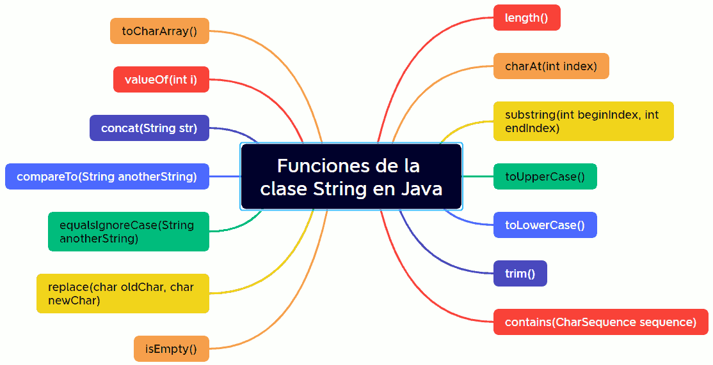

Una cadena es una secuencia de caracteres. Java tiene una clase incorporada en el paquete java.lang que encapsula las estructuras de datos de una cadena. Esta clase, llamada String, es la representación como objeto de una matriz de caracteres que no se puede cambiar.
Podemos crear un objeto de tipo cadena de dos formas diferentes:
- Como una variable de un tipo de dato primitivo.
String nombre = "Alicia Giménez Bartlett";
- Como un objeto:
String nombre = new String("Alicia Giménez Bartlett");
Aunque los dos métodos son válidos se recomienda el primero ya que es más eficiente.
Los literales de cadena van entre comillas: "Ejemplo de cadena", y pueden utilizarse en cualquier lugar que se utilice un objeto de tipo String.
Uso de cadenas
- Concatenación: java permite concatenar cadenas fácilmente utilizando el operador +.
String nom = "Juan";
String cognoms = "Lora Gisbert";
String nomComplet = cognoms + ", " + nom;
- Métodos de cadenas: la clase String tiene una serie de métodos para trabajar con cadenas. Algunos de uso frecuente son:
- .length(): longitud de la cadena. Devuelve el número de caracteres de una cadena.
String s = "abc";
System.out.println(s.length()); // mostrará 3 - .charAt(índice): extracción de caracteres. Extrae un único carácter de una cadena correspondiente con el carácter cuya posición viene indicada por índice. Has de tener en cuenta que la primera posición es el 0.
"abc".charAt(1); // devolverá 'b' - .getChars(inicio, fin, destino, posdest): extrae varios caracteres de la cadena y los añade en destino. Hay que especificar el índice del primer carácter y del último más uno que se desean copiar, además de la matriz char donde se desean colocar dichos caracteres.
String s = "Esto no es una canción";
char buf[] = new char[2];
s.getChars(5, 7, buf, 0); - .equals(cadena): compara con la cadena pasada como parámetro. Devuelve true si las cadenas son iguales. En caso contrario devuelve false.
- .equalsIgnoreCase (cadena): igual que la anterior pero sin tener en cuenta las mayúsculas y minúsculas.
String cadena1="Carmen";
String cadena2="carmen";
System.out.println(cadena1.equals(cadena2)); // false
System.out.println(cadena1.equalsIgnoreCase(cadena2)); // true
El método equals y el operador == hacen dos pruebas completamente diferentes para la igualdad. Mientras que el método equals compara los caracteres contenidos en una String, el operador == compara dos referencias de objeto para ver si se refieren a la misma instancia. Por tanto, no podemos usar el signo == por que esta sería una comparación binaria de punteros a memoria y no nos devolvería el valor correcto. - compareTo( pcadena ): compara dos cadenas lexicográficamente y devuelve un valor entero. El valor devuelto es 0 si ambas cadenas tienen el mismo contenido; es un valor negativo si pcadena es mayor; es un valor positivo si pcadena es menor.
String apellido1 = "Monfort";
String apellido2 = "Rubert";
System.out.println(apellido1.compareTo(apellido2)); // muestra -5 - .toLowerCase(): convierte la cadena a minúsculas.
- .toUpperCase(): convierte la cadena a mayúsculas.
- .toString(): convierte un objeto a una cadena o String. Todas las clases heredan toString() desde la clase Object y muchas clases del paquete java.lang sobreescriben este método para proporcionar una implementación más acorde con la propia clase. Por ejemplo, las clases Character, Integer, Boolean, etc.. sobreescriben toString() para proporcionar una representación en String de los objetos.
- .valueOf(): permite convertir variables de diferentes tipos a un String.
System.out.println(String.valueOf(Math.PI)); - substring(inicio, final): devuelve parte de una cadena. La cadena devuelta comenzará en la posición inicio y acabará en la posición final. Si final no se indica será el último carácter de la cadena.
String str="El lenguaje Java";
String subStr=str.substring(12); // subStr --> "Java"
String subStr=str.substring(3, 11); // subStr --> "lenguaje"
- .length(): longitud de la cadena. Devuelve el número de caracteres de una cadena.
